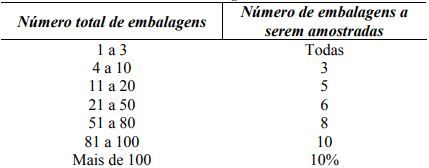

Abreviaturas:
Remédio: qualquer recurso utilizado para melhorar uma condição de saúde ou estado mental.
Nome científico x nome popular x sinonímia botânica:
Chás medicinais x fitoterápicos:
• Medicamentos Fitoterápicos: apresentam segurança e eficácia basea-das em evidências clínicas e são caracterizados pela constância de sua qualidade.
• Produto Tradicional Fitoterápico, com segurança e efetividade basea-das em dados de uso seguro e efetivo publicados na literatura técnico-científica e no uso tradicional a partir de experiências existentes no Pa-ís e no exterior, considerando a demonstração de uso pelo tempo em que vem sendo utilizado. Os Produtos Tradicionais Fitoterápicos não podem ser utilizados para o tratamento de doenças, distúrbios, condi-ções ou ações consideradas graves e não devem ser administrados pelas vias injetável e oftálmica (BRASIL, 2013; BRASIL, 2014).
Indicação e alegação de uso (BRASIL, 2014): o Indicação: para uma espécie possuir indicação de uso, deve existir compro-vação clínica de sua eficácia (ou seja, deve demonstrar eficácia e segurança em ensaios clínicos).
Alegação de uso: termo utilizado para PTFs de registro simplificado, cuja validação de efetividade e segurança se baseia em experiências de uso tradicional e em publica-ções técnico-científicas. Métodos de preparo de droga vegetal:
Droga vegetal: planta medicinal ou suas partes, que contenham as substâncias res-ponsáveis pela ação terapêutica. Pode estar na forma íntegra, rasurada, triturada ou pulverizada (BRASIL, 2014).
Advertências:
Condições edafoclimáticas: fatores que influenciam a quantidade de metabólitos se-cundários nas plantas, como ataque de patógenos e predadores, idade da planta, índi-ce pluviométrico, radiação solar, ritmo circadiano, qualidade do solo, temperatura, disponibilidade de água, altitude e composição atmosférica.
Tempo e modo de uso: Os sistemas de notificação de eventos de saúde relacionados a terapias e de avaliação de segurança são voltados para o uso de medicamentos sin-téticos e/ou contendo substâncias ativas isoladas ou altamente purificadas, o que difi-culta a avaliação das ocorrências com plantas medicinais e produtos derivados. Den-tre as causas de efeitos adversos estão a identificação incorreta da espécie vegetal, a má qualidade no processo de produção pela ausência de controle das condições eda-foclimáticas e pelo uso de agrotóxicos, não realização de controle de qualidade e pre-sença de material contaminado (SIMÕES et al.; 2010; SHAW et al., 2012). Além dis-so, as plantas medicinais são consideradas xenobióticos, ou seja, corpos estranhos ao organismo, podendo ser biotransformados em moléculas tóxicas. Exemplos de deri-vados vegetais tóxicos são a estricnina (alcaloide) e a digitoxina (cardioglicosídeo). O uso prolongado de plantas medicinais pode, portanto, instalar efeitos a longo prazo como danos hepáticos, renais e até carcinogênicos, que dificilmente serão correlacio-nados clinicamente. Também deve ser considerada a possibilidade de retardo na busca de atendimento profissional pelo alívio de sintomas através do uso de chás me-dicinais, agravando o quadro do paciente.
Legislações e material:
• RDC Nº 235, de 20 de junho de 2018: Dispõe sobre alterações e inclu-sões no controle de qualidade no registro e pós-registro de medica-mentos dinamizados, fitoterápicos, específicos e produtos biológicos.
• Instrução Normativa Nº 10/2014: corrige a nomenclatura botânica do maracujá: Passiflora incarnata L.
Classes químicas e metabólitos secundários:
• Compostos fenólicos: são solúveis em água e possuem a propriedade de complexar metais. Contribuem para o sabor, odor e coloração de diversas espécies vegetais, tendo importância econômica como flavo-rizantes e corantes alimentícios. Compreendem um grande grupo de substâncias, sendo divididos em subgrupos. De modo geral, podem apresentar diferentes propriedades, tais como antioxidante, expecto-rante, hipocolesterolêmica, anti-inflamatória.
• Saponinas: moléculas com uma parte hidrofílica e outra lipofílica. Den-tre suas propriedades gerais, são atribuídas frequentemente a elevada solubilidade em água, as características anfifílica e tensoativa, a ação hemolítica sobre membranas de células sanguíneas e a complexação com esteroides. A ação antifúngica e hipocolesterolemiante de algu-mas saponinas deve-se a esta última característica.
• Compostos com enxofre (glicosinolatos): de odor marcante, possuem efeitos biológicos que envolvem a ação repelente química e comuni-cação interespécies. As espécies vegetais que possuem compostos com enxofre são de interesse farmacológico por sua ação sobre con-dições de saúde como hipertensão, agregação plaquetária e metabo-lismo lipídico, além de influenciarem positivamente o sistema imunoló-gico. Entretanto, algumas espécies podem apresentar toxicidade ele-vada pela liberação de produtos biologicamente ativos em reações en-zimáticas.
• Alcaloides: possuem característica de amargor, em geral são farmaco-logicamente muito ativos e apresentam elevada toxicidade, porém atu-almente no Brasil são comercializadas muitas especialidades farma-cêuticas com metabólitos desta classe, como atropina, escopolamina, efedrina, reserpina, vincristina, vimblastina, codeína e morfina.
• Metilxantinas: são pseudoalcaloides. Agem como estimulantes sobre os sistemas nervoso central, cardiovascular, renal e digestivo e sobre o metabolismo de carboidratos e lipídeos, aumentando a lipólise. Exem-plos dessa classe são a cafeína, a teobromina e a teofilina.
Farmacógeno: parte da planta com a atividade farmacológica e/ou que contém o maior teor de substâncias ativas.
Armazenamento: a droga vegetal deve ser acondicionada em local seco, ao abrigo da luz e em recipiente fechado com identificação da espécie. O chá medicinal deve ser preparado na ocasião de seu consumo, evitando que pelo armazenamento prolonga-do ocorra degradação dos constituintes ativos.
Análises de drogas vegetais (BRASIL, 2019):

• Método gravimétrico (dessecação) – mais simples e rápido, porém não aplicável no caso de conter substâncias voláteis.
• Método azeotrópolico (destilação com tolueno) – indicado para drogas vegetais que contenham óleos voláteis.
• Método volumétrico (Karl Fischer).